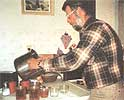
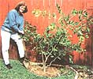

COUNTRY LORE
Exactly as made by a real bee!
Recently, I went to visit my friend Skip McKibben on the small beautiful island of Rangell, the oldest established island in Alaska. One day I watched him gather some fireweed and clover on the island and proceed to make the simplest most delicious honey. I thought I'd pass along the recipe.
10 cups sugar
1 teaspoon alum powder
2 1/2 cups boiling water
30 white clover blossoms
18 red clover blossoms
18 fireweed flowers, or red rose petals
Boil sugar, alum powder, and water for ten minutes. Add the remaining ingredients. Cover and steep for ten minutes. Strain. Pour into warm jars. (They do not need to be sealed.)
-Judith Miller
Elizabeth, CO
Frozen Candle Pops
I'm writing in response to the wonderful idea in the December/January 1996 issue. The article "Crafty Uses for Old Insulators" in Country Lore described uses for old insulators. I promptly tried the ideas and was pleased with the results! I have a tip for removing candles from their candleholders. When the candles have burned down, instead of using hot water to remove them simply place the entire candle and holder in the freezer. After a few hours, the candle pops out when you shake it a couple of times! No more digging and gouging!
-Dorothy Sieler-Bonk
Billings, MT
Mushy Carton Protects Plants I always buy eggs in those mushy cardboard cartons. Then, when it's time to plant seeds, I punch a tiny hole in each segment, fill it with good soil and drop a seed in. It's easier to water, and, as the tiny seedlings appear, the carton walls shade them. The carton dissolves beautifully into the soil as the plants grow tall and strong. It's easy to thin out the weak ones and it's hard for bugs to crawl up on the walls of the carton to bother my plants.
-Anne Schraff
Spring Valley, CA
Wasted Soap, a Thing of the Past In the January 1996 issue, John Turner gave a procedure for saving the little leftover ends from bar soap. I use a different procedure. After we collect several dozen ends, I break them up and soak them in water for several days. Then, with some more water, I mix the whole mess up with a blender to make a quart or so of liquid soap.
-Raymond Sommers
rsommers@worf uswp. edu
Recycled Orange Mesh Bags I too don't like to waste soap, but I don't have time to waste torching my soap or blending it into hand soap. Wasted soap slivers are a thing of the past when you put the bar in any kind of netting (for example, a knotted oranges bag). You can easily hang the netting and it makes an effective scrubber. To make soap last longer, buy several bars at a time, take off the wrappers and let them air-harden. Then the soap won't disappear the second it hits the water.
-Linda Williams
Stetsonville, WI I make my own scouring pads from the mesh bags oranges come in. I cut off pieces and stuff them in each other. I then sew the end and I have a perfect scouring pad.
-Elizabeth McKinney
Grays Knob, KY
Peat Pot Substitutes I used to use peat pots to protect my tomato seedlings from exposure to night temperatures below 50° F. They permitted an early start under fluorescent lights, and then easy hardening off outdoors. Unfortunately these peat pots produce difficulties because they speed up evaporation causing dryness. They can also damage roots when you remove the pots or cause a reduction of oil pH if the pot is buried with the plants.
To save space, cut their height equal to the width. (You should cut a drainage corner in the one strong corner formed at the double thickness.) If you plan to transplant early, cut carton tops into overlapping dividers to permit four plants in one short carton. Also, many small plants can be raised in cartons sideways if you reclose the spout with about three staples (and cut off the stronger corner on the bottom). If the gardener is disabled and a friend (God?) waters one's plants, they may even be forgotten until harvest time. The cartons are a great improvement over peat pots and also allow me to distribute surplus aloe plants for other clumsy people like myself who get burnt unexpectedly. That way they can choose their own pots.
-Paul Cover
Hilliard, OH
Tree Circles Explained
I like to keep a space of about a foot of soil around our fruit trees, so I don't scrape the trunks when I mow the lawn. This is a good way to kill a tree. Because I am the lazy type, I have never measured, and my circles have never been quite round. This never bothered me, but this morning I discovered a quick way to get a perfect circle of any dimension. Here's how to do it: Make a compass by tying one end of a length of string loosely to the base of the tree and the other end around the handle of a shovel. Keep the shovel facing the tree and the loop around the tree rotating as you cut into the soil.
-Janet Aird Choi
San Gabriel, CA
Operation Reuse
Re: "Don't Let the Ice Cream Melt!" Country Lore, January 1996. Freezing water bottles is a good idea for keeping an ice chest cold, but you can go one step better. Many local Sierra Club chapters are involved in Operation Reuse. That project distributes the many sterile nonrecyclable water bottles from hospitals. So you can do the environment a favor by using these bottles for your water needs. The bottles are free for the asking.
-Pat Rovan
Pporsche@aol.com
Sour Milk, Sweet Cheese Hate to throw a-whey milk that's gone bad? Just pour it into a sauce pan and heat it to near boiling until the milk begins to curdle. Stir in a splash of lemon juice to sweeten the mix and help it curdle. Remove it from the burner and strain through a fine meshed strainer or several folds of cheese cloth. Allow it to drain for an hour or two. The longer it drains, the firmer it gets. Add chives, garlic or other spices to taste. Great on salads, pasta, pizza, or any cheese lovers' favorite food.
-John A. West
Renton, WA
Toothpaste Saves CDs
I read the article on "Sensible Dental Care" by Charles Dickson, Ph.D., and it helped me to do something completely unrelated to making my own toothpaste. I read the article when the issue first came out, and I mentally filed the information about the five ingredients of toothpaste, one of which was an abrasive. I own a half dozen compact discs. One-sixth of my collection had a problem with skipping. I knew nothing about compact discs, but I could see the bottom side of the skipping disc was badly scratched. I reasoned that if I could polish the scratches off of the disc, the skipping wold stop. I decided that since the abrasive in toothpaste was safe for my teeth, it would also be safe for the disc.
I used a name-brand green paste (Crest) that I've brushed with since childhood. I carefully swirled the paste on the disc's surface, using only my fingers. I applied equal pressure to the opposite side of the compact disc so that I didn't break it. I rinsed and dried the disc carefully. Not a single skip remained, and I didn't have to stack pennies on the tone arm.
-Matthew D. Young
Lancaster, OH
Maytag Wringer Washer Pea Sheller
Having read "Maggie's Dishwasher Trout" in the March issue, I must confess that I can't imagine what necessity was the mother of that invention. I was inspired however, to share the unconventional use of yet another appliance. I am the proud owner and frequent user of my grandmother's 1930s Maytag wringer washer. Imagine my delight to find that it's the best pea shelling device I've ever found!
-Helen Screaming Eagle
Eagles Mere, PA
Any Suggestions?
I would like to find out how and with what to clean out 275-gallon oil tanks in order to use them to carry water to a garden.
-Charles Steigmeyer
Irons, MI
Through the years, we've all discovered a few solutions to the frustrating little problems of everyday life. Send your tips to: "Country Lore," c/o
Mother Earth News, P.O. Box 129,
Arden,
NC 28704,
or write to us via e-mail at MEarthNews@aol.com. Please include your phone number and a photo and we'll give your hometown something to be proud
of.
|
 Skip McKibben making honey |
Dorothy Sieler-Bonk. |
Pat and her lama. |
|
 Matthew D. Young and his nephew. |
|
|